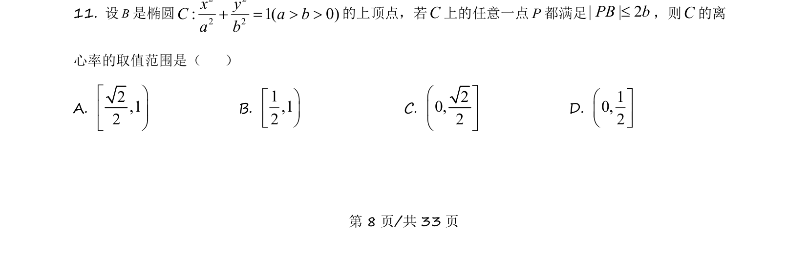
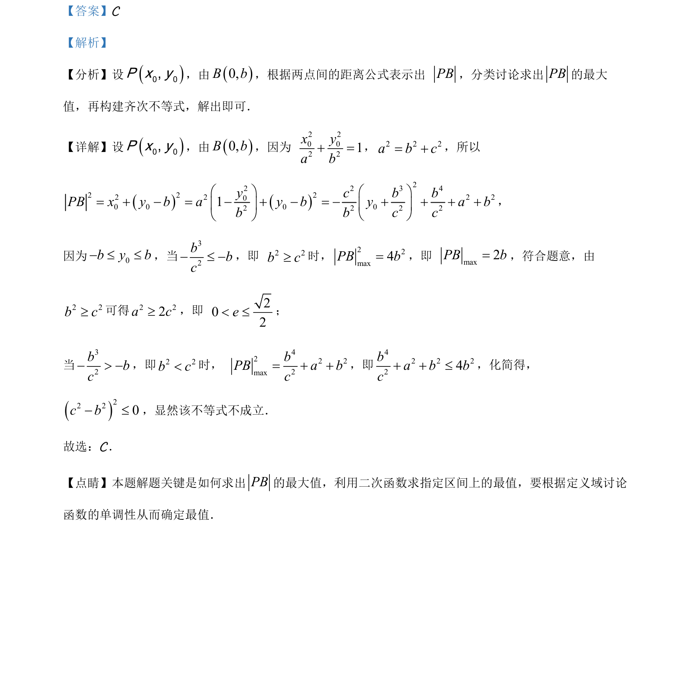

考点：两点间距离公式 二次函数最值 椭圆离心率 分类讨论
两点间距离公式
二次函数最值
椭圆离心率
分类讨论

已知椭圆上动点及其对称点，求距离最大值，结合二次函数分类讨论构造齐次不等式，解得离心率范围。

📄 原 PDF 第 8 页：素材/真题/吉林/2008-2024·（吉林）数学高考真题/2021年高考数学试卷（理）（全国乙卷）（新课标Ⅰ）（解析卷）.pdf
素材/真题/吉林/2008-2024·（吉林）数学高考真题/2021年高考数学试卷（理）（全国乙卷）（新课标Ⅰ）（解析卷）.pdf